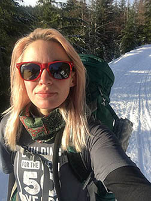

Welcome, Wild Wanderer
Hey Friend! You've arrived at a personal collection of stories of my ventures out into the wild of the Pacific Northwest! I'm Debbie, great to meet you! Enjoy your stay, thanks for visiting, & happy trails!
About the Author:
I'm a born & raised Washington gal. I hang around with two dogs, one cat, and currently reside in Seattle. I am a weekday student & barista and a weekend adventurer. Walking through the woods, sleeping under the stars, eating rehydrated macaroni & cheese, I have uncovered an insurmountable comfort and peace, as the low hum of the earth beneath me reminds me of my insignificance. I truly enjoy being in the wilderness, as well as meeting and connecting with wonderful strangers and new friends on the trail!